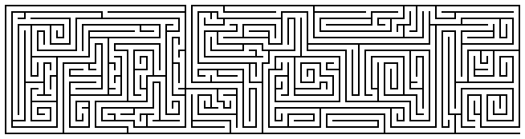

Read the lessons at the Vanderbilt Library website: http://divinity.lib.vanderbilt.edu/lectionary/cEpiphany/cTransfiguration.htm

Read
the lessons at the Vanderbilt Library website:
http://divinity.lib.vanderbilt.edu/lectionary/cEpiphany/cTransfiguration.htm
Sermon Summary
|
Listen to the lessons for the following words, and tick them off when you hear them: |
___ "Mount
Sinai" |
|
Is today's Sermon based on one of the Lessons? |
Yes / No |
|
Circle the Lesson that the Sermon is based on. |
Exodus
34:29-35 None of the Above |
|
What is the main point of the Sermon? |
_______________________________ |
|
Write down one Scripture reference that the preacher makes |
_______________________________ |
|
Write down one figure of speech used by the preacher (Metaphors, Similes, hyperbole) |
_______________________________ |
|
Write down five interesting words and discuss them with an adult during coffee hour |
_______________
|

Middle-School Pew-work ...Page 2
|
|
G G S B E C A M E A
M E N U
|
APPEARANCE ACCOMPLISH JERUSALEM DEPARTURE SUDDENLY SPEAKING MOUNTAIN DAZZLING APPEARED TALKING SAYINGS PRAYING CLOTHES CHANGED ELIJAH BECAME WHITE WHILE WHICH THESE PETER MOSES JESUS JAMES GLORY EIGHT AFTER ABOUT WITH WERE WENT TOOK THEY NRSV LUKE JOHN FACE DAYS TWO SAW NOW MEN HIS HIM AND UP OF |
|
(Luke 9:28-31) Now about eight days after these sayings Jesus took with him Peter and John and James, and went up on the mountain to pray. {29} And while he was praying, the appearance of his face changed, and his clothes became dazzling white. {30} Suddenly they saw two men, Moses and Elijah, talking to him. {31} They appeared in glory and were speaking of his departure, which he was about to accomplish at Jerusalem. (NRSV) |
||
from www.geocities.com/lectionarypuzzles/ Free to distribute for free with this notice. Words are in a straight line in all directions. |
||
Who is the "voice" speaking to, primarily, in the first passage?
______________________________________________________________________________
Who is the "voice" speaking to in today's passage?
______________________________________________________________________________
If the Holy Spirit is represented by a dove in the first passage, in what way might the Holy Spirit be represented in today's passage?
______________________________________________________________________________
In what ways did both Moses and Jesus "change" as they made time and space to listen to God?
______________________________________________________________________________
|
28 And
it came to pass about an eight days after these sayings, he took
Peter and John and James, and went up into a mountain to
pray. |
31 Who
appeared in glory, and spake of his decease which he should
accomplish at Jerusalem. |
Good for us to
be here: and let us make three tabernacles; one for thee, and one
for Moses, and one for Elias: not knowing what he said. |